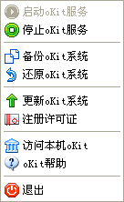

安装oKit系统后，服务器端将启动托盘。托盘菜单如下图所示：

图 oKit托盘
托盘工具开机自动启oKit服务也随开机自动启动。托盘实现了以下功能：
1、启oKit服务
点击该菜单项可以启动oKit服务，oKit服务启动后，用户可以正常访问系统。
2、停止oKit服务
点击该菜单项可以停止oKit服务，oKit服务停止后，用户无法访问系统。
3、备份oKit系统
用户可以手动将系统备份，用于还原。系统备份有两种用途：
i、定期备份系统，确保用户在系统使用过程中遇到不可预期的错误时能将系统还原到备份之前的状态。
ii、可以将数据从A服务器备份出来，还原到B服务器中。这样就方便的实现了用户数据的转移。
注意：
i、不同的服务器之间备份还原时，必须确保oKit系统在其服务器上的安装路径一致。
ii、备份出的文件包含两个文件夹：<projectBackup>、<dateBackup>，请将备份出的文件放置到合适的文件夹下。例如：D:/demo/projectBackup；D:/demo/dateBackup。
iii、请勿将备份出的两个文件夹存放在不同的路径。
4、还原oKit系统
还原oKit系统功能与备份oKit系统功能相对应。用户点击菜单项将弹出备份文件选择界面，指定备份文件存放的路径，例如：D:/demo（与上节示例路径对应），等待系统自动完成还原即可。
5、更新oKit系统
此功能用于升级oKit系统版本。用户点击该菜单项，会弹出升级程序选择界面，用户选择正确的升级程序后，等待系统更新即可。开始更新前系统会提示用户是否备份数据。建议用户选择备份，以确保用户在更新过程中遇到不可预期的错误时能将系统还原到更新之前的状态。
详细的更新过程参考《统御项目管理系统安装手册》。
6、注册许可证
商业版用户需要注册许可证才oKit系统！详细注册方法请参考《统御项目管理系统安装手册》
7、访问本机oKit
将在浏览器中打开本机所安装的oKit系统首页。
8、oKit帮助
将在浏览器中打开oKit系统的帮助中心。
9、退出
即退出系统托盘。因为系统开机自启动，所以正常使用时托盘功能是用不到的，用户可以选择退出托盘。如需使用可以在开始菜单（开始-所有程序-oKit-oKit托盘工具）中打开。